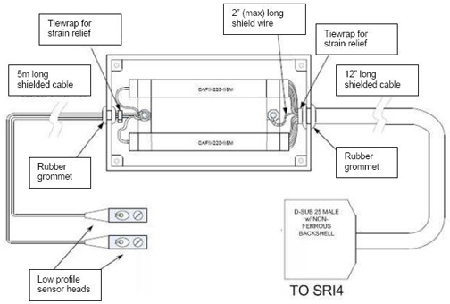
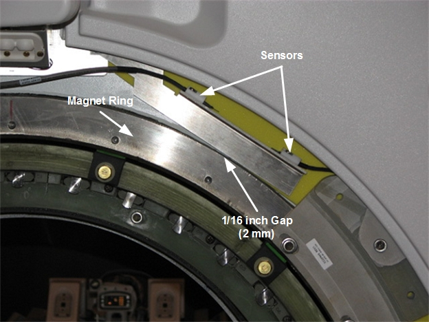

Operating Documentation
Direction 5670000, Rev# 1
Optima MR450w 1.5T Service Methods
Module Version 5.0, Version Date 1/12/10
Operating Documentation |
| Required Persons | Preliminary Reqs | Procedure | Finalization |
|---|---|---|---|
| 2 for MR450/MR750; 1 for MR450w | Not Applicable | 5 hours for MR450/MR750; 1 hour for MR450w | 4 hours for MR450/MR750; 15 minutes for MR450w |
This procedure describes the replacement of the RF Body Coil air flow sensor.
| Item | Qty | Effectivity | Part# | Manufacturer | |
|---|---|---|---|---|---|
| Non-Ferrous Tool Kit | 1 | - | 5112581 | - | |
| Item | Qty | Effectivity | Part# | Manufacturer | |
|---|---|---|---|---|---|
| Air Flow Sensor | 1 | - | See FRU Manual | - | |
Follow Lockout/Tagout procedures per LOTO for RF and PEN Cabinets and Magnet Room Electronics.
Remove side cover and left skirt cover. See Side Cover Removal and Install and Skirt Cover Removal and Install.
Disconnect the RF Body Coil Air Flow Sensor housing connector from the SRI. See Illustration 2.
Illustration 1: Air Flow Sensor Assembly Drawing (Note: Figure is for reference only)

Illustration 2: Air Flow Sensor Housing

The RF Coil Air Flow sensor head housings are located at approximately the 1 o'clock position on the magnet enclosure as shown in Illustration 3.
Illustration 3: RF Coil Air Flow Sensor Head Bracket (Shown with Front End Bell removed)

Remove the two (2) screws from each clamp which holds the sensor head in place (see Illustration 4). You may need a screwdriver to separate the clamp from the bracket.
| NOTE: | Make sure the air flow sensors are all the way behind the front end bell but not touching the magnet ring. To adjust, move the bracket down until the bracket touches the magnet ring, and then move it up 1/16 inch (2 mm). |
Illustration 4: Removing the Air Flow Sensors

Remove the sensor head from the housing and free the cable from the magnetic enclosure.
Route the new cable through the magnet enclosure and insert the sensor head under the clamp so that the sensor is positioned in the center of the housing cutout. Retighten the two (2) screws.
Reconnect the Sensor housing to the SRI.
Replace the Skirt Covers and Side Covers following the procedures listed in Step 1 through Step 2 in reverse order.
Ensure that sensors are operating appropriately. See Body Air Flow Functional Check document for details.
Ensure the laser light is aligned. See Laser Light Alignment document for details.